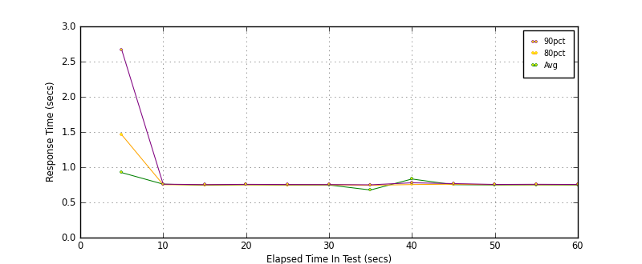
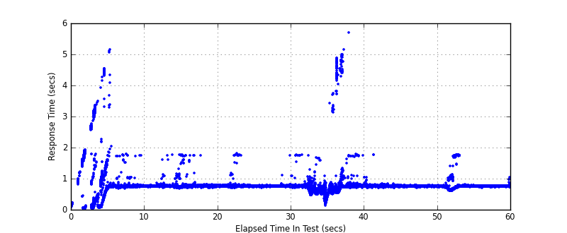
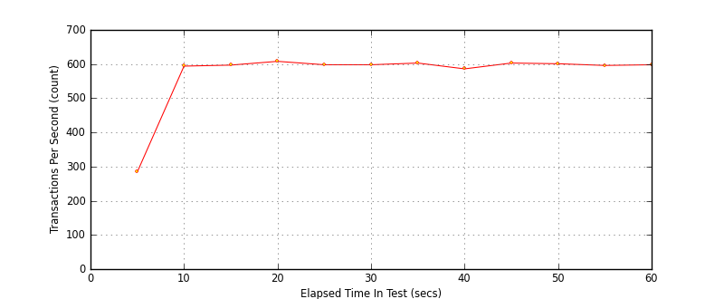

Performance Results Report
Summary
transactions: 34809
errors: 0
run time: 60 secs
rampup: 0 secs
test start: 2017-06-01 19:29:28
test finish: 2017-06-01 19:30:28
time-series interval: 5 secs
workload configuration:
| group name | threads | script name |
|---|
| user_group-10 | 30 | redis_stress.py |
| user_group-11 | 30 | redis_stress.py |
| user_group-12 | 30 | redis_stress.py |
| user_group-13 | 30 | redis_stress.py |
| user_group-14 | 30 | redis_stress.py |
| user_group-15 | 30 | redis_stress.py |
| user_group-2 | 30 | redis_stress.py |
| user_group-3 | 30 | redis_stress.py |
| user_group-1 | 30 | redis_stress.py |
| user_group-6 | 30 | redis_stress.py |
| user_group-7 | 30 | redis_stress.py |
| user_group-4 | 30 | redis_stress.py |
| user_group-5 | 30 | redis_stress.py |
| user_group-8 | 30 | redis_stress.py |
| user_group-9 | 30 | redis_stress.py |
All Transactions
Transaction Response Summary (secs)
| count | min | avg | 80pct | 90pct | 95pct | max | stdev |
|---|
| 34809 | 0.035 | 0.757 | 0.752 | 0.758 | 0.777 | 5.696 | 0.298 |
Interval Details (secs)
| interval | count | rate | min | avg | 80pct | 90pct | 95pct | max | stdev |
|---|
| 1 | 1424 | 284.80 | 0.035 | 0.923 | 1.461 | 2.667 | 3.192 | 4.529 | 1.002 |
| 2 | 2972 | 594.40 | 0.675 | 0.759 | 0.752 | 0.759 | 0.769 | 5.140 | 0.213 |
| 3 | 2988 | 597.60 | 0.661 | 0.745 | 0.749 | 0.753 | 0.758 | 1.767 | 0.060 |
| 4 | 3044 | 608.80 | 0.696 | 0.751 | 0.750 | 0.757 | 0.774 | 1.763 | 0.081 |
| 5 | 2990 | 598.00 | 0.686 | 0.748 | 0.750 | 0.755 | 0.761 | 1.797 | 0.070 |
| 6 | 2992 | 598.40 | 0.704 | 0.747 | 0.751 | 0.754 | 0.757 | 1.746 | 0.020 |
| 7 | 3019 | 603.80 | 0.131 | 0.676 | 0.743 | 0.750 | 0.763 | 1.752 | 0.131 |
| 8 | 2933 | 586.60 | 0.439 | 0.833 | 0.754 | 0.778 | 0.966 | 5.696 | 0.653 |
| 9 | 3017 | 603.40 | 0.686 | 0.752 | 0.759 | 0.767 | 0.779 | 1.755 | 0.031 |
| 10 | 3007 | 601.40 | 0.702 | 0.748 | 0.752 | 0.755 | 0.758 | 0.791 | 0.007 |
| 11 | 2980 | 596.00 | 0.595 | 0.749 | 0.752 | 0.757 | 0.776 | 1.765 | 0.135 |
| 12 | 2992 | 598.40 | 0.701 | 0.748 | 0.752 | 0.755 | 0.758 | 1.028 | 0.011 |
Graphs
Response Time: 5 sec time-series

Response Time: raw data (all points)

Throughput: 5 sec time-series
